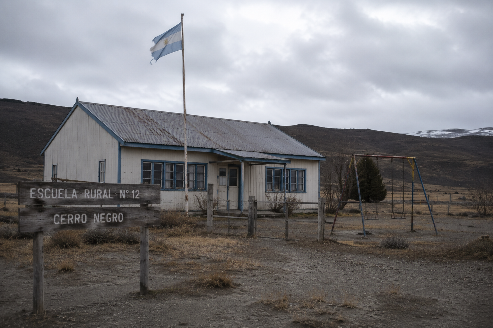

The school at Cerro Negro closed with a notice taped to the door.
Officials cited declining enrollment. Families cited declining attention.
When schools disappear, communities rarely collapse immediately. They empty slowly, one household at a time.
Independent Journalism Since 1993
Education
Closure of a rural school and migration of local families.

The Beacon archive image. File reference: cerro-negro-school.png
The school at Cerro Negro closed with a notice taped to the door.
Officials cited declining enrollment. Families cited declining attention.
When schools disappear, communities rarely collapse immediately. They empty slowly, one household at a time.